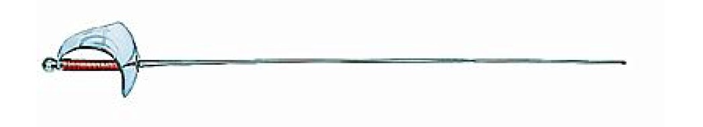

Une équipe hors pair
Nous sommes une équipe passionnée et déterminée, composé de six personnes dont cinq filles.
Nous sommes tous différents ce qui permet à chacun de contribuer de manière unique à notre projet. Ainsi de la conception à la réalisation nous travaillons ensemble pour transformer notre vision en réalité.
Nos convictions
Notre objectif principal est de créer la voiture écologique de demain. Cette expérience nous a donc permis de développer des compétences en travail d’équipe, en communication et en technicité. <:/p>

C’est une arme d’estoc, qui est munie d’une pointe et d’une garde qui protège la main. L’épée mesure environ 110cm de long et pèse environ 750g.
C’est la seule arme à l’escrime permettant de toucher la totalité du corps. Les pratiquants de l’épée s’appellent les épéistes.
Le sabre
Une arme qu'il faut savoir manier habilement.

C’est une arme de taille et d’estoc, qui nécessite de la rapidité et de l’agilité. Cela entraine donc l’exécution rapide des touches.
Pour obtenir le point lors d’une touche, il faut toucher son adversaire avec la lame ; même avec les bords tranchants sur tout le haut du corps et la tête. Les pratiquants du sabre s’appellent les sabreuses ou les sabreurs.